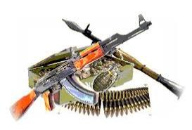

Slaughter Central

The United States as a Mass-Killing Machine
by Tom Engelhardt
By the time you read this piece, it will already be out of date. The reason’s simple enough. No matter what mayhem I describe, with so much all-American weaponry in this world of ours, there’s no way to keep up. Often, despite the headlines that go with mass killings here, there’s almost no way even to know.
On this planet of ours, America is the emperor of weaponry, even if in ways we normally tend not to put together. There’s really no question about it. The all-American powers-that-be and the arms makers that go with them dream up, produce, and sell weaponry, domestically and internationally, in an unmatched fashion. You’ll undoubtedly be shocked, shocked to learn that the top five arms makers on the planet — Lockheed Martin, Boeing, Northrop Grumman, Raytheon, and General Dynamics — are all located in the United States.
Put another way, we’re a killer nation, a mass-murder machine, slaughter central. And as we’ve known since the U.S. dropped atomic bombs on Hiroshima and Nagasaki in August 1945, there could be far worse to come. After all, in the overheated dreams of both those weapons makers and Pentagon planners, slaughter-to-be has long been imagined on a planetary scale, right down to the latest intercontinental ballistic missile (ICBM) being created by Northrop Grumman at the cost of at least $100 billion. Each of those future arms of ultimate destruction is slated to be “the length of a bowling lane” and the nuclear charge that it carries will be at least 20 times more powerful than the atomic bomb dropped on Hiroshima. That missile will someday be capable of traveling 6,000 miles and killing hundreds of thousands of people each. (And the Air Force is planning to order 600 of them.)
By the end of this decade, that new ICBM is slated to join an unequaled American nuclear arsenal of — at this moment — 3,800 warheads. And with that in mind, let’s back up a moment.
Have Gun — Will Travel
Before we head abroad or think more about weaponry fit to destroy the planet (or at least human life on it), let’s just start right here at home. After all, we live in a country whose citizens are armed to their all-too-labile fingertips with more guns of every advanced sort than might once have been imaginable. The figures are stunning. Even before the pandemic hit and gun purchases soared to record levels — about 23 million of them (a 64% increase over 2019 sales) — American civilians were reported to possess almost 400 million firearms. That adds up to about 40% of all such weaponry in the hands of civilians globally, or more than the next 25 countries combined.
And if that doesn’t stagger you, note that the versions of those weapons in public hands are becoming ever more militarized and powerful, ever more AR-15 semi-automatic rifles, not .22s. And keep in mind as well that, over the years, the death toll from those weapons in this country has grown staggeringly large. As New York Times columnist Nicholas Kristof wrote recently, “More Americans have died from guns just since 1975, including suicides, murders and accidents (more than 1.5 million), than in all the wars in United States history, dating back to the Revolutionary War (about 1.4 million).”
In my childhood, one of my favorite TV programs was called Have Gun — Will Travel. Its central character was a highly romanticized armed mercenary in the Old West and its theme song — still lodged in my head (where so much else is unlodging these days) — began:
“Have gun will travel is the card of a man.
A knight without armor in a savage land.
His fast gun for hire heeds the calling wind.
A soldier of fortune is the man called Paladin.”
Staggering numbers of Americans are now ever grimmer versions of Paladin. Thanks to a largely unregulated gun industry, they’re armed like no other citizenry on the planet, not even — in a distant second place — the civilians of Yemen, a country torn by endless war. That TV show’s title could now be slapped on our whole culture, whether we’re talking about our modern-day Paladins traveling to a set of Atlanta spas; a chain grocery store in Boulder, Colorado; a real-estate office in Orange, California; a convenience store near Baltimore; or a home in Rock Hill, South Carolina.
Remember how the National Rifle Association has always defended the right of Americans to own weapons at least in part by citing this country’s hunting tradition? Well, these days, startling numbers of Americans, armed to the teeth, have joined that hunting crew. Their game of choice isn’t deer or even wolves and grizzly bears, but that ultimate prey, other human beings — and all too often themselves. (In 2020, not only did a record nearly 20,000 Americans die from gun violence, but another 24,000 used guns to commit suicide.)
As the rate of Covid-19 vaccination began to rise to remarkable levels in this country and ever more public places reopened, the first mass public killings (defined as four or more deaths in a public place) of the pandemic period — in Atlanta and Boulder — hit the news big-time. The thought, however, that the American urge to use weapons in a murderous fashion had in any way lessened or been laid to rest, even briefly, thanks to Covid-19, proved a fantasy of the first order.
At a time when so many public places like schools were closed or their use limited indeed, if you took as your measuring point not mass public killings but mass shootings (defined as four or more people wounded or killed), the pandemic year of 2020 proved to be a record 12 months of armed chaos. In fact, such mass shootings actually surged by 47%. As USA Today recounted, “In 2020, the United States reported 611 mass shooting events that resulted in 513 deaths and 2,543 injuries. In 2019, there were 417 mass shootings with 465 deaths and 1,707 injured.” In addition, in that same year, according to projections based on FBI data, there were 4,000 to 5,000 more gun murders than usual, mainly in inner-city communities of color.
In the first 73 days of Joe Biden’s presidency, there were five mass shootings and more than 10,000 gun-violence deaths. In the Covid-19 era, this has been the model the world’s “most exceptional” nation (as American politicians of both parties used to love to call this country) has set for the rest of the planet. Put another way, so far in 2020 and 2021, there have been two pandemics in America, Covid-19 and guns.
And though the weaponization of our citizenry and the carnage that’s gone with it certainly gets attention — President Biden only recently called it “an international embarrassment” — here’s the strange thing: when reporting on such a binge of killings and the weapons industry that stokes it, few here think to include the deaths and other injuries for which the American military has been responsible via its “forever wars” of this century outside our own borders. Nor do they consider the massive U.S. weapons deliveries and sales to other countries that often enough lead to the same. In other words, a full picture of all-American carnage has — to use an apt phrase — remained missing in action.
Cornering the Arms Market
In fact, internationally, things are hardly less mind-boggling when it comes to this country and weaponry. As with its armed citizenry, when it comes to arming other countries, Washington is without peer. It’s the weapons dealer of choice across much of the world. Yes, the U.S. gun industry that makes all those rifles for this country also sells plenty of them abroad and, in the Trump years, such sales were only made easier to complete (as was the selling of U.S. unmanned aerial drones to “less stable governments”). When it comes to semi-automatic weapons like the AR-15 or even grenades and flamethrowers, this country’s arms makers no longer even need State Department licenses, just far easier-to-get Commerce Department ones, to complete such sales, even to particularly abusive nations. As a result, to take one example, semi-automatic pistol exports abroad rose 148% in 2020.
But what I’m particularly thinking about here are the big-ticket items that those five leading weapons makers of the military-industrial complex eternally produce. On the subject of the sale of jet fighters like the F-16 and F-35, tanks and other armored vehicles, submarines (as well as anti-submarine weaponry), and devastating bombs and missiles, among other things, we leave our “near-peer” competitors as well as our weapons-making allies in the dust. Washington is the largest supplier to 20 of the 40 major arms importers on the planet.

Buy the Book!
When it comes to delivering the weapons of war, the U.S. leads all its competitors in a historic fashion, especially in the war-torn and devastated Middle East. There, between 2015 and 2019, it gobbled up nearly half of the arms market. Unsurprisingly, Saudi Arabia was its largest customer, which, of course, only further stoked the brutal civil war in Yemen, where U.S. weapons are responsible for the deaths of thousands of civilians. As Pentagon expert William Hartung wrote of those years, U.S. arms deliveries to the region added up to “nearly three times the arms Russia supplied to MENA [the Middle East and North Africa], five times what France contributed, 10 times what the United Kingdom exported, and 16 times China’s contribution.” (And often enough, as in Iraq and Yemen, some of those weapons end up falling into the hands of those the U.S. opposes.)
In fact, in 2020, this country’s arms sales abroad rose a further 2.8% to $178 billion. The U.S. now supplies no fewer than 96 countries with weaponry and controls 37% of the global arms market (with, for example, Lockheed Martin alone taking in $47.2 billion in such sales in 2018, followed by the four other giant U.S. weapons makers and, in sixth place, the British defense firm BAE).
This remains the definition of mayhem-to-come, the international version of that spike in domestic arms sales and the killings that went with it. After all, in these years, deaths due to American arms in countries like Afghanistan and Yemen have grown strikingly. And to take just one more example, arms, ammunition, and equipment sold to or given to the brutal regime of Rodrigo Duterte for the Philippine military and constabulary have typically led to deaths (especially in its “war on drugs”) that no one’s counting up.
And yet, even combined with the dead here at home, all of this weapons-based slaughter hardly adds up to a full record when it comes to the U.S. as a global mass-killing machine.
Far, Far from Home
After all, this country has a historic 800 or so military bases around the world and nearly 200,000 military personnel stationed abroad (about 60,000 in the Middle East alone). It has a drone-assassination program that extends from Afghanistan across the Greater Middle East to Africa, a series of “forever wars” and associated conflicts fought over that same expanse, and a Navy with major aircraft carrier task forces patrolling the high seas. In other words, in this century, it’s been responsible for largely uncounted but remarkable numbers of dead and wounded human beings. Or put another way, it’s been a mass-shooting machine abroad.
Unlike in the United States, however, there’s little way to offer figures on those dead. To take one example, Brown University’s invaluable Costs of War Project has estimated that, from the beginning of the invasion of Afghanistan in 2001 to late 2019, 801,000 people, perhaps 40% of them civilians, were killed in Washington’s war on terror in Afghanistan, Iraq, Pakistan, Yemen, and elsewhere. Of course, not all of those by any means were killed by the U.S. military. In fact, some were even American soldiers and contractors. Still, the figures are obviously sizeable. (To take but one very focused example, from December 2001 to December 2013 at TomDispatch, I was counting up civilian wedding parties taken down by U.S. air power in Afghanistan, Iraq, and Yemen. I came up with eight well-documented ones with a death toll of nearly 300, including brides, grooms, musicians, and revelers.)
Similarly, last December, Neta Crawford of the Costs of War Project released a report on the rising number of Afghan civilians who had died from U.S. air strikes in the Trump years. She found that in 2019, for instance, “airstrikes killed 700 civilians — more civilians than in any other year since the beginning of the war.” Overall, the documented civilian dead from American air strikes in the war years is in the many thousands, the wounded higher yet. (And, of course, those figures don’t include the dead from Afghan air strikes with U.S.-supplied aircraft.) And mind you, that’s just civilians mistaken for Taliban or other enemy forces.
Similarly, thousands more civilians were killed by American air strikes across the rest of the Greater Middle East and northern Africa. The Bureau of Investigative Journalism, which followed U.S. drone strikes for years, estimated that, in Afghanistan, Pakistan, Somalia, and Yemen, by 2019 such attacks had killed “between 8,500 and 12,000 people, including as many as 1,700 civilians — 400 of whom were children.”
And that, of course, is just to begin to count the dead in America’s conflicts of this era. Or thought of another way, in this century, the U.S. military has been a kind of global Paladin. Its motto could obviously be “have gun, will travel” and its forces and those allied to it (and often supplied with American arms) have certainly killed staggering numbers of people in conflicts that have devastated communities across a significant part of the planet, while displacing an estimated 37 million people.
Now, return to those Americans gunned down in this country and think of all of this as a single weaponized, well-woven fabric, a single American gun culture that spans the globe, as well as a three-part killing machine of the first order. Much as mass shootings and public killings can sometimes dominate the news here, a full sense of the damage done by the weaponization of our culture seldom comes into focus. When it does, the United States looks like slaughter central.
Or as that song from Have Gun — Will Travel ended:
Paladin, Paladin,
Where do you roam?
Paladin, Paladin,
Far, far from home.
Far, far from home — and close, close to home — indeed.